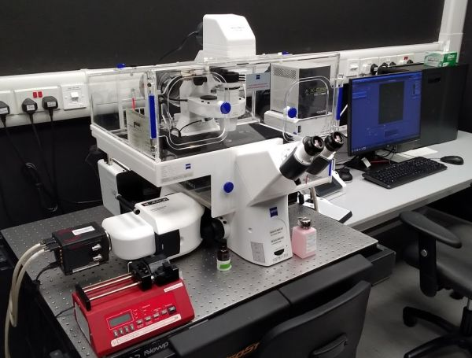

This motorised widefield
fluorescence microscope features a fast and sensitive sCMOS camera.
Aurox Clarity add-on allows fast optical sectioning using a
laser-free (therefore N3 license free!) spinning disk. The grid
pattern of the Aurox spinning disk promises better light collection
efficiency compared to a traditional pinhole spinning disk without
compromising the optical sectioning ability. The motorised stage allows
multi-position time-lapse imaging or tile scans of large samples;
hardware autofocus ensures continuously stable focusing throughout
time-lapse acquisition of arbitrary duration. The microscope is housed
in a heated enclosure.

Available
techniques:
- Widefield fluorescence, transmitted (brightfield, phase contrast,
DIC, polarised light) and reflected light imaging with a fast and
sensitive camera
- Long-term time-lapse imaging (with hardware autofocus)
- Fast 3D-fluorescence imaging with optical sectioning (using spinning
disk)
Objectives:
- EC Plan-Neofluar 10x/0.3 dry, FWD 5.2 mm, CG 0.17 mm
- Plan Apochromat 40x/0.95 dry, FWD 0.25 mm, CG 0.13-0.21 mm (Phase
contrast, DIC)
- LD Plan-Neofluar 63x/0.75 dry, FWD 1.2-2.2 mm, CG 0-1.5 mm
- Plan Apochromat 63x/1.4 oil, FWD 0.19 mm, CG 0.17 mm (DIC)
- Plan Apochromat 100x/1.4 oil, FWD 0.17 mm, CG 0.17 mm (DIC)
[FWD = free working distance, CG = cover glass]
Tube lenses: 1x, 1.6x, 2.5x
Fluorescence
excitation sources:
Filter sets and
dichroics:
Widefield epifluorescence:
Excitation filter wheel:
- 385/30
- 469/38
- 555/30
- 631/33
Dichroic beam-splitter wheel:
- quad-beam-splitter 405 + 493 + 575 + 653
- 409
- 70/30 (Transmission/Reflection) partially reflective mirror
Emission filter wheel:
- quad-band filter 425/30 + 514/30 + 592/25 + 709/100
- 435/40
- 494/41
- 525/50
Aurox Clarity (4 cubes inserted at a time, contact ABIF
staff to check which):
- DAPI (exc. 392/23; em. 447/60)
- GFP (exc. 446/40; em. 525/45)
- YFP (exc. 500/24; em. 542/27)
- DsRed (exc. 554/23; em. 609/54)
- mCherry (exc. 578/21; em. 641/75)
- Cy5 (exc. 635/18; em. 680/42)
Detectors and
cameras:
- Widefield epifluorescence: Hamamatsu Orca Flash 4.0 (2048x2048
pixels, 6.5 µm/pixel)
- Aurox Clarity: Hamamatsu Orca Flash 4.0 (2048x2048 pixels, 6.5
µm/pixel)
Software:
- ZEN 2.6 (blue)
- Aurox Visionary
Other features:
- Motorised stage
- Motorised excitation and emission filter wheels
- Motorised focus drive
- Definite Focus.2 hardware autofocus
- Heated enclosure
- Stage-top incubator with CO2
atmosphere control (on request)
| Usage fees* [SGD/hour] |
NTU |
Academia |
Industry |
| Widefield |
15 |
30 |
48 |
| Aurox spinning disk |
45 |
72 |
| Location |
ABIF, SCELSE, B2 (SBS-B2n-27P.3) |
| Contact |
abif@e.ntu.edu.sg;
nobic.facilities@e.ntu.edu.sg |
* Long-term discounts of 75% and 95% apply after 8 and 24 hours of
continuous usage, respectively.
BACK TO TOP